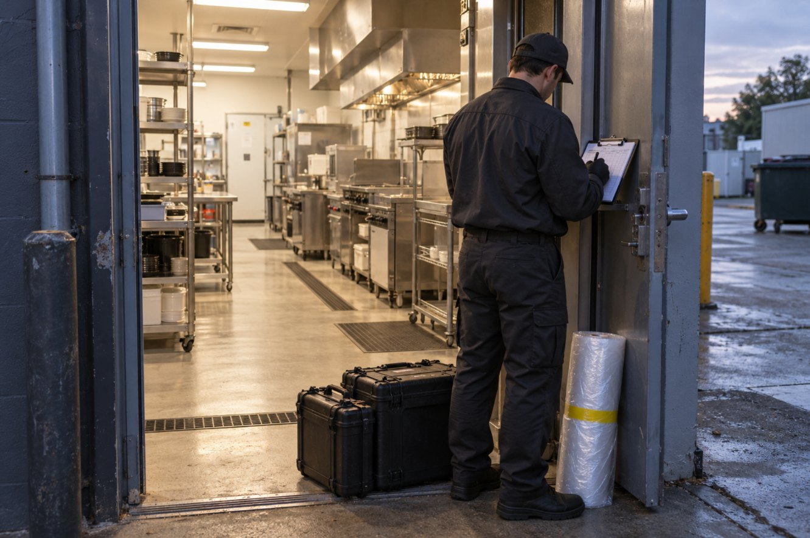
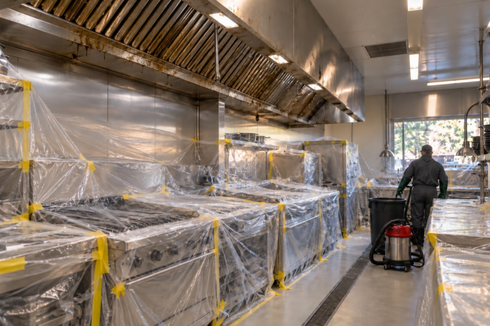
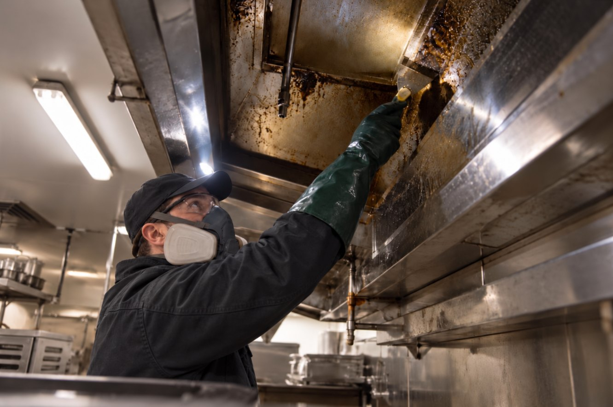
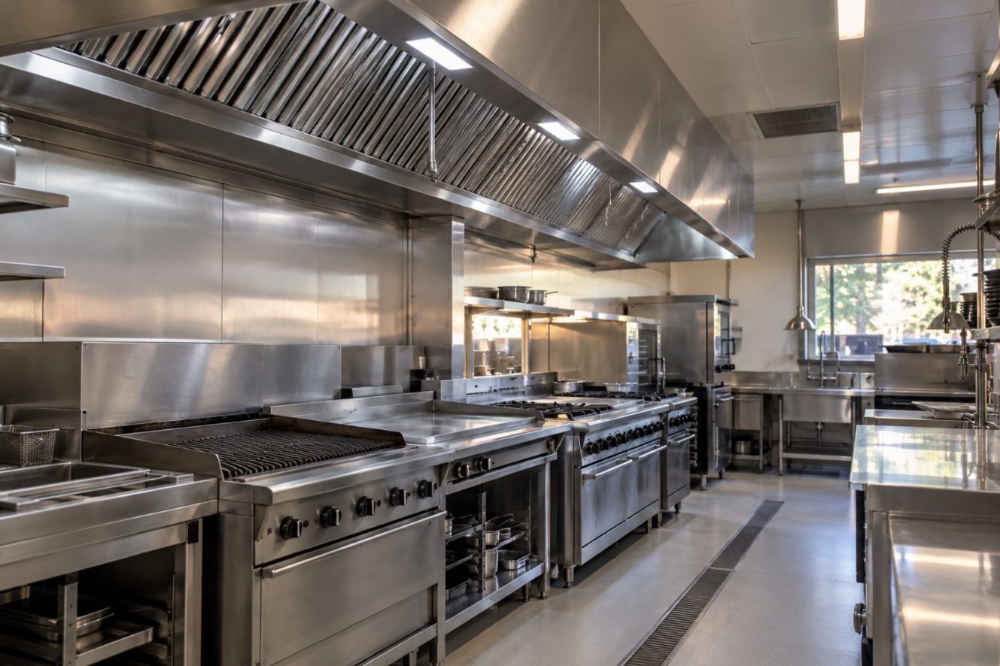
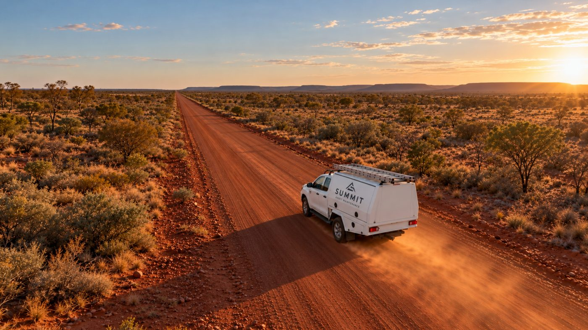

Kitchen exhaust cleaningAdelaide
Kitchen exhaust systems, maintained with certainty.
Cleaning from canopy to fan for restaurants, hotels, clubs, aged care, stadiums and multi-site venues across Adelaide, the Hills and the wine regions. Planned visits, photographic reports and service certificates.
Serviced & certified to AS 1851-2012
1,400 μm before, 40 μm after · Within criteria
Register item 1 · fit an access panel; service on next visit
Built for the kitchens where the record matters.
Restaurants, cafes & winery kitchens
Your interval set from your own kitchen, visits outside trading hours, and a certificate your insurer can read. The measured survey is free in metro Adelaide.
Hotels, pubs & venue groups
Venue-level scope and access notes on one calendar, a dependable handback, and a consolidated record for accreditation and insurer renewal.
Clubs & community kitchens
Bowling, golf, football and surf clubs, community and not-for-profit kitchens: a plain schedule, a visit that works around match days and meal nights, and a record the committee can file.
Aged care & care-setting kitchens
Work scheduled between meal services in an occupied setting, inductions and safe work method statements supplied before the day, and a per-site record ready for audit.
Multi-site operators, stadiums & event venues
Store and kitchen identifiers on every document, servicing in the trading or event-free window you set, contractor inductions handled, invoicing by purchase order or site code, and one consolidated record for head office or the venue manager.
Government & defence
Base messes, canteens, hospital, correctional and council kitchens: NSSIC clearance and a National Police Check held, visits planned to the site’s access and escort requirements, inductions and safe work method statements supplied before the day, purchase order and contract references on every document, and a record ready for audit.
The whole system, canopy to discharge.
Choose a part of the system to see what is done there and what you receive for it.
Canopy, filters & plenum
The work: canopy and plenum degreased, filters cleaned or exchanged, and the hood interior brought back to bare metal.
What you receive: readings and a photo pair at access point 1, and the canopy and filters recorded as their own line on the certificate.
Ductwork & access points
The work: horizontal runs and the riser cleaned through every access point that can be opened. Where a run cannot be reached, the report says so and recommends the remedy, usually an access panel.
What you receive: a grease-depth reading and before-and-after photographs at each point, and any limitation listed with its remedy.
Fan & discharge
The work: fan chamber, impeller and discharge cowl degreased; rooftop surrounds checked and containment proposed where grease is reaching the roof.
What you receive: readings and photographs at access point 4, and rooftop findings carried onto the register.
Agreed, protected, cleaned, handed back.

Access agreed
Scheduled ahead, typically outside trading hours, inductions arranged.

Kitchen protected
Cooking equipment and food areas covered before any cleaning starts.

Cleaned & measured
Canopy to discharge, with readings and photographs at every access point.

Handed back & reported
Protection and waste removed, kitchen ready for service, report and certificate issued.
Grease pads, bin rooms, docks and entries are pressure-washed on the same calendar. Surrounds · The full method and intervals
A record you can read, forward and file.
Three questions a manager asks after a service, answered on one page: what was serviced, what needs attention, and when the next visit is due. The full works report, photographs and numbered certificate sit behind it.
After the visit, on one page
One schedule, one contact, one record.
A shared calendar with site-level detail, one point of contact, and invoicing arranged to suit your purchasing — calendar-monthly, or by purchase order and site code. Regional South Australian properties are scoped from a site list and planned by arrangement.
Two rounds a year: March and September.
From 2027 Summit runs a Northern Territory round each March and September. One trip serves many kitchens, so resorts, roadhouses, clubs, aged-care homes and remote properties get the same measured service and the same certificate as Adelaide, planned months ahead rather than flown in as a callout.

Book onto a round
Send the site list: kitchens, systems, access and contacts. Places on the March and September rounds are confirmed in writing.
Scoped before travel
Photographs or drawings, the visit plan, inductions and service windows agreed ahead, so the round arrives knowing the work.
On the round
Each kitchen cleaned canopy to discharge, measured and photographed, and handed back ready for service inside the agreed window.
After the round
Certificate, works report and register for each kitchen, a consolidated summary for the property or group, and the next round booked.
Resorts and remote properties with several kitchens, roadhouses, clubs and aged-care homes that need a certified service on a known date rather than when a contractor happens to be passing.
A kitchen that cannot wait for the next round is quoted as its own project, with the same scope and record.
Priced per kitchen from the site list, with travel shared across the round. Nothing is quoted from a form alone.
Send a site list now and the property is scoped before the round is planned.
South Australia Own a commercial building? Where the kitchen exhaust is on your ESP schedule, the Form 3 line needs evidence behind it. Form 3 in plain English
Request a quote or a site survey.
A single kitchen, a group, or a Northern Territory round: tell us the site and we will scope it. The measured survey is free for commercial kitchens in metro Adelaide, and you keep the written report either way.
enquiries@summitam.au · 0411 854 283